Resonanzen messen¶
Klipper bietet integrierte Unterstützung für die kompatiblen Beschleunigungssensoren ADXL345, MPU-9250, LIS2DW und LIS3DH, mit denen sich die Resonanzfrequenzen des Druckers für verschiedene Achsen messen und Input Shaper zur Kompensation von Resonanzen automatisch abstimmen lassen. Beachten Sie, dass die Verwendung von Beschleunigungssensoren etwas Löten und Crimpen erfordert. Der ADXL345 kann an die SPI-Schnittstelle eines Raspberry Pi oder einer MCU-Platine angeschlossen werden (diese muss ausreichend schnell sein). Die MPU-Familie kann direkt an die I2C-Schnittstelle eines Raspberry Pi angeschlossen werden, oder an eine I2C-Schnittstelle einer MCU-Platine, die den Fast Mode mit 400 kbit/s in Klipper unterstützt. Der LIS2DW und der LIS3DH können mit denselben Überlegungen wie oben entweder an SPI oder I2C angeschlossen werden.
Achten Sie bei der Beschaffung von Beschleunigungssensoren darauf, dass es eine Vielzahl unterschiedlicher Platinendesigns und Klone davon gibt. Soll der Sensor an einen 5V-Drucker-MCU angeschlossen werden, stellen Sie sicher, dass er über einen Spannungsregler und Pegelwandler verfügt.
Stellen Sie bei ADXL345-Sensoren sicher, dass die Platine den SPI-Modus unterstützt (eine kleine Anzahl von Platinen scheint durch das Ziehen von SDO auf GND fest auf I2C konfiguriert zu sein).
Auch für MPU-9250/MPU-9255/MPU-6515/MPU-6050/MPU-6500/ICM20948 sowie LIS2DW/LIS3DH gibt es eine Vielzahl von Platinendesigns und Klonen mit unterschiedlichen I2C-Pull-up-Widerständen, die möglicherweise ergänzt werden müssen.
MCUs mit Klipper I2C fast-mode Unterstützung¶
| MCU Familie | Getestete MCU(s) | MCU(s) mit Unterstützung |
|---|---|---|
| Eine Microcomputer Marke | 3B+, Pico | 3A, 3A+, 3B, 4 |
| AVR ATmega | ATmega328p | ATmega32u4, ATmega128, ATmega168, ATmega328, ATmega644p, ATmega1280, ATmega1284, ATmega2560 |
| AVR AT90 | - | AT90usb646, AT90usb1286 |
| SAMD | SAMC21G18 | SAMC21G18, SAMD21G18, SAMD21E18, SAMD21J18, SAMD21E15, SAMD51G19, SAMD51J19, SAMD51N19, SAMD51P20, SAME51J19, SAME51N19, SAME54P20 |
Installationsanleitung¶
Verkabelung¶
Für die Signalintegrität über eine längere Distanz wird ein Ethernet-Kabel mit geschirmten verdrillten Adernpaaren (Cat5e oder besser) empfohlen. Falls weiterhin Probleme mit der Signalintegrität auftreten (SPI-/I2C-Fehler):
- Überprüfen Sie die Verkabelung sorgfältig mit einem digitalen Multimeter auf:
- Korrekte Verbindungen im ausgeschalteten Zustand (Durchgang)
- Korrekte Versorgungsspannung und Erdung
- Nur I2C:
- Prüfen Sie, dass die Widerstände der SCL- und SDA-Leitungen gegen 3,3V im Bereich von 900 Ohm bis 1,8K liegen
- Vollständige technische Details finden Sie in Kapitel 7 der I2C-Bus-Spezifikation und des Benutzerhandbuchs UM10204 für den Fast-Mode
- Kürzen Sie das Kabel
Verbinden Sie die Schirmung des Ethernet-Kabels nur mit der Masse der MCU-Platine/des Pi.
Überprüfen Sie Ihre Verkabelung sorgfältig, bevor Sie die Spannung einschalten, um eine Beschädigung Ihres MCU/Raspberry Pi oder des Beschleunigungssensors zu vermeiden.
SPI Beschleunigungsmesser¶
Empfohlene Reihenfolge der Aderpaare für drei verdrillte Adernpaare:
GND+MISO
3.3V+MOSI
SCLK+CS
Beachten Sie, dass anders als bei einer Kabelschirmung GND an beiden Enden verbunden sein muss.
ADXL345¶
Direkt zum Raspberry Pi¶
Hinweis: Viele MCUs funktionieren mit einem ADXL345 im SPI-Modus (z. B. Pi Pico); Verkabelung und Konfiguration hängen von Ihrer jeweiligen Platine und den verfügbaren Pins ab.
Sie müssen den ADXL345 über SPI mit Ihrem Raspberry Pi verbinden. Beachten Sie, dass die I2C-Verbindung, die in der ADXL345-Dokumentation vorgeschlagen wird, einen zu geringen Durchsatz hat und nicht funktionieren wird. Das empfohlene Anschlussschema:
| ADXL345 Pin | RPi Pin | RPi Pin Name |
|---|---|---|
| 3V3 (oder VCC) | 01 | 3.3V DC power |
| GND | 06 | Masse (-) |
| CS | 24 | GPIO08 (SPI0_CE0_N) |
| SDO | 21 | GPIO09 (SPI0_MISO) |
| SDA | 19 | GPIO10 (SPI0_MOSI) |
| SCl | 23 | GPIO11 (SPI0_SCLK) |
Anschlussbeispiele für diverse ADXL345 Boards (Bilder bereitgestellt von Fritzing):
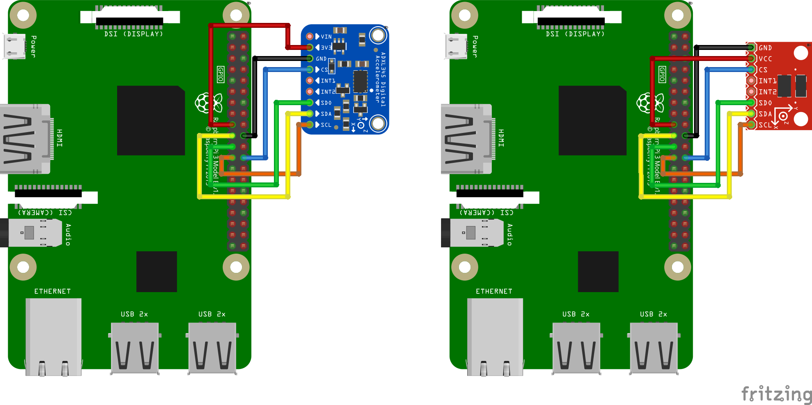
Verwendung Raspberry Pi Pico¶
Sie können den ADXL345 an Ihren Raspberry Pi Pico anschließen und den Pico anschließend per USB mit Ihrem Raspberry Pi verbinden. Dadurch lässt sich der Beschleunigungssensor leicht an anderen Klipper-Geräten wiederverwenden, da die Verbindung per USB statt über GPIO erfolgt. Der Pico verfügt nicht über viel Rechenleistung, stellen Sie daher sicher, dass er ausschließlich für den Beschleunigungssensor genutzt wird und keine anderen Aufgaben übernimmt.
Um eine Beschädigung Ihres RPi zu vermeiden, verbinden Sie den ADXL345 ausschließlich mit 3,3V. Je nach Platinenlayout kann ein Pegelwandler vorhanden sein, wodurch 5V für Ihren RPi gefährlich werden.
| ADXL345 Pin | Pico pin | Pico pin name |
|---|---|---|
| 3V3 (oder VCC) | 36 | 3.3V DC power |
| GND | 38 | Masse (-) |
| CS | 2 | GP1 (SPI0_CSn) |
| SDO | 1 | GP0 (SPI0_RX) |
| SDA | 5 | GP3 (SPI0_TX) |
| SCl | 4 | GP2 (SPI0_SCK) |
Verkabelungsdiagramme für einige der ADXL345-Platinen:
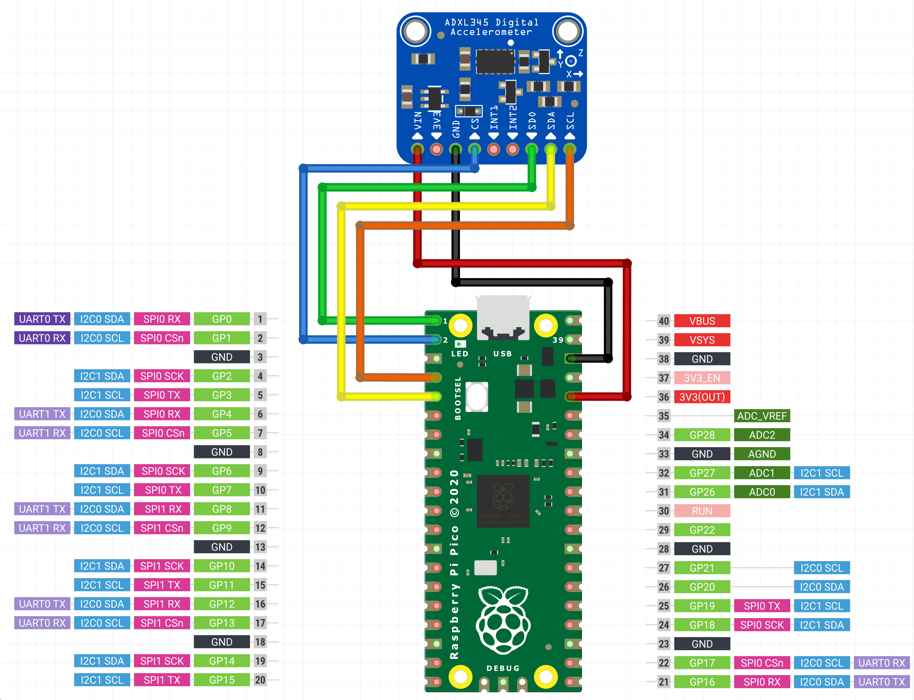
I2C Beschleunigungsmesser¶
Empfohlene Reihenfolge der Aderpaare für drei Paare (bevorzugt):
3.3V+GND
SDA+GND
SCL+GND
Oder für zwei Paare:
3.3V+SDA
GND+SCL
Beachten Sie, dass anders als bei einer Kabelschirmung alle GND-Leitungen an beiden Enden verbunden sein sollten.
MPU-9250/MPU-9255/MPU-6515/MPU-6050/MPU-6500/ICM20948¶
Diese Beschleunigungssensoren wurden getestet und funktionieren über I2C auf dem RPi, RP2040 (Pico) und AVR mit 400 kbit/s (Fast Mode). Einige MPU-Beschleunigungssensormodule enthalten bereits Pull-up-Widerstände, manche sind mit 10K jedoch zu groß und müssen ausgetauscht oder durch kleinere parallel geschaltete Widerstände ergänzt werden.
Empfohlenes Anschlussschema für I2C am Raspberry Pi:
| MPU-9250 pin | RPi Pin | RPi Pin Name |
|---|---|---|
| VCC | 01 | 3.3V DC Spannung |
| GND | 09 | Masse (-) |
| SDA | 03 | GPIO02 (SDA1) |
| SCl | 05 | GPIO03 (SCL1) |
Der RPi verfügt über eingebaute 1,8K-Pull-up-Widerstände an SCL und SDA.
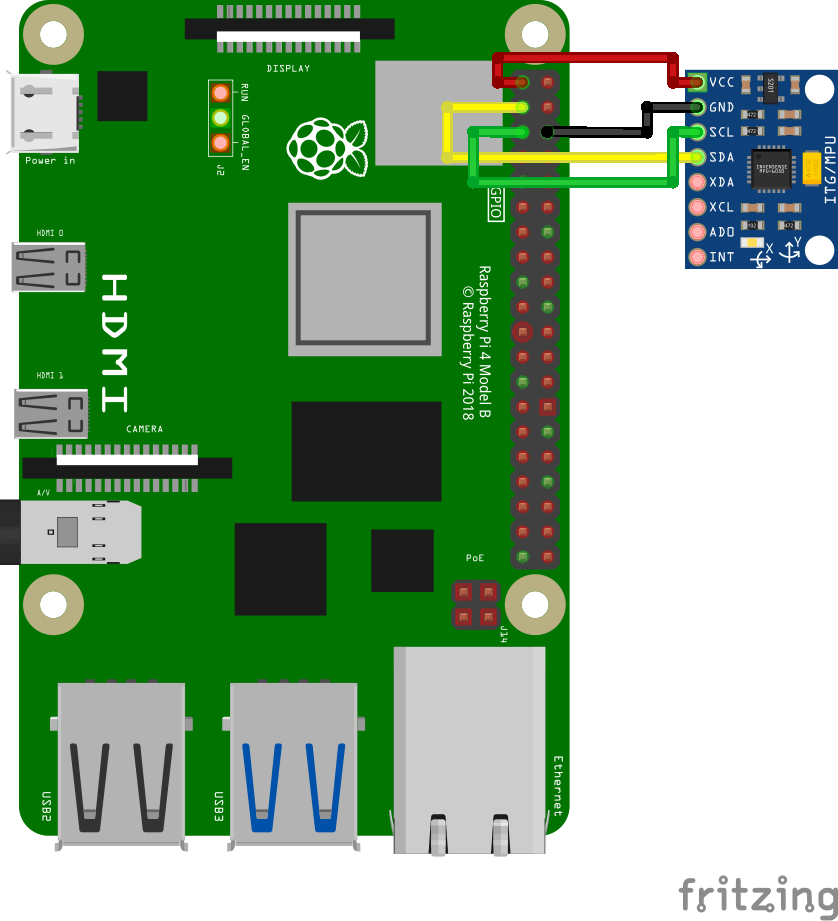
Empfohlenes Anschlussschema für I2C (i2c0a) am RP2040:
| MPU-9250 pin | RP2040 pin | RP2040 Pin Name |
|---|---|---|
| VCC | 36 | 3v3 |
| GND | 38 | Masse (-) |
| SDA | 01 | GP0 (I2C0 SDA) |
| SCl | 02 | GP1 (I2C0 SCL) |
Der Pico verfügt über keine eingebauten I2C-Pull-up-Widerstände.
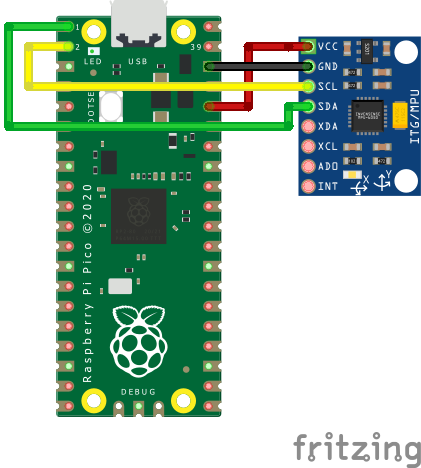
Empfohlenes Anschlussschema für I2C (TWI) am AVR ATmega328P Arduino Nano:¶
| MPU-9250 pin | Atmega328P TQFP32 pin | Atmega328P pin name | Arduino Nano pin |
|---|---|---|---|
| VCC | 39 | - | - |
| GND | 38 | Masse (-) | GND |
| SDA | 27 | SDA | A4 |
| SCl | 28 | SCl | A5 |
Der Arduino Nano verfügt weder über eingebaute Pull-up-Widerstände noch über einen 3,3V-Spannungspin.
Befestigung des Beschleunigungssensors¶
Der Beschleunigungssensor muss am Druckkopf befestigt werden. Es sollte eine passende Befestigungslösung für den jeweiligen, eigenen 3D Drucker benutzt werden. Es emfpiehlt sich die Achsen des Beschleunigungssensors so auszurichten, dass diese mit den Achsen des 3D Druckers übereinstimmen (aber falls es einfacher ist, lassen sich die Achsen auch tauschen - zum Beispiel kann die z-Achse des Beschleunigungssensors auch zum Messen der Resonanz für die x-Achse des Drucker verwendet werden, usw.).
Ein Beispiel der Befestigung des ADXL345 am SmartEffector:
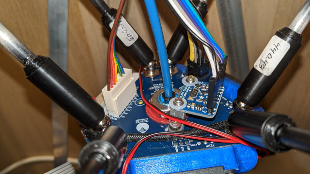
Beachte das bei Cartesian Druckern (Bettschubser) zwei Befestigungen benötigt werden: eine für den Druckkopf und eine für das Druckbett. Zudem müssen die Messungen separat für die jeweiligen Achsen durchgeführt werden. Siehe hierzu auch section für weitere Details.
ACHTUNG: Stelle sicher, dass weder der Beschleunigungssensor noch die Schrauben, mit denen er befestigt wurde, irgendein metallenes Teil des Druckers berühren. Grundsätzlich muss die Befestigung so gewählt werden, dass eine elektrische Isolation des Beschleunigungssensors gegenüber dem Drucker jederzeit gewährleistet ist. Wird dies nicht eingehalten, kann es zu einer Masseschleife im System kommen, welche die Elektronik beschädigen kann.
Software Installation¶
Beachten Sie, dass Resonanzmessungen und die automatische Shaper-Kalibrierung zusätzliche Softwareabhängigkeiten benötigen, die nicht standardmäßig installiert sind. Führen Sie zunächst auf Ihrem Raspberry Pi die folgenden Befehle aus:
sudo apt update
sudo apt install python3-numpy python3-matplotlib libatlas-base-dev libopenblas-dev
Um anschließend NumPy in der Klipper-Umgebung zu installieren, führen Sie den folgenden Befehl aus:
~/klippy-env/bin/pip install -v "numpy<1.26"
Beachten Sie, dass dies je nach Leistung der CPU sehr lange dauern kann, bis zu 10-20 Minuten. Haben Sie Geduld und warten Sie den Abschluss der Installation ab. In manchen Fällen kann die Installation fehlschlagen, wenn die Platine zu wenig RAM besitzt, sodass Sie Swap aktivieren müssen. Beachten Sie außerdem die erzwungene Version, da neuere NumPy-Versionen Anforderungen haben, die in manchen Klipper-Python-Umgebungen möglicherweise nicht erfüllt werden können.
Prüfen Sie nach der Installation, dass der folgende Befehl keine Fehler anzeigt:
~/klippy-env/bin/python -c 'import numpy;'
Die korrekte Ausgabe sollte einfach eine neue Zeile sein.
ADXL345 mit RPi konfigurieren¶
Prüfen und befolgen Sie zunächst die Anweisungen im Dokument RPi-Mikrocontroller, um den "Linux MCU" auf dem Raspberry Pi einzurichten. Dadurch wird eine zweite Klipper-Instanz konfiguriert, die auf Ihrem Pi läuft.
Vergewissern Sie sich, dass der Linux-SPI-Treiber aktiviert ist, indem Sie sudo raspi-config ausführen und SPI im Menü "Interfacing options" aktivieren.
Fügen Sie Folgendes zur Datei printer.cfg hinzu:
[mcu rpi]
serial: /tmp/klipper_host_mcu
[adxl345]
cs_pin: rpi:None
[resonance_tester]
accel_chip: adxl345
probe_points:
100, 100, 20 # an example
Es empfiehlt sich, mit einem Messpunkt in der Mitte des Druckbetts, leicht darüber, zu beginnen.
ADXL345 mit Pi Pico konfigurieren¶
Flashen der Pico Firmware¶
Kompilieren Sie auf Ihrem Raspberry Pi die Firmware für den Pico.
cd ~/klipper
make clean
make menuconfig
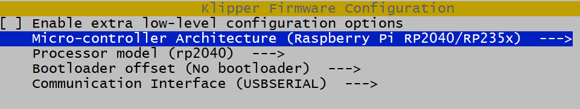
Halten Sie nun die Taste BOOTSEL am Pico gedrückt und verbinden Sie den Pico per USB mit dem Raspberry Pi. Kompilieren und flashen Sie die Firmware.
make flash FLASH_DEVICE=first
Falls dies fehlschlägt, wird Ihnen mitgeteilt, welches FLASH_DEVICE verwendet werden soll. In diesem Beispiel wäre das make flash FLASH_DEVICE=2e8a:0003.
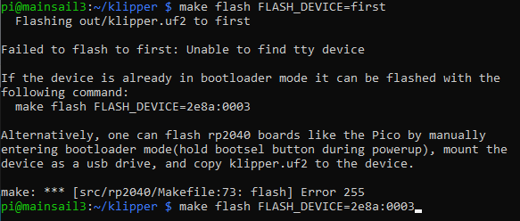
Konfigurieren Sie die Verbindung¶
Der Pico startet nun mit der neuen Firmware neu und sollte als serielles Gerät erscheinen. Finden Sie das serielle Pico-Gerät mit ls /dev/serial/by-id/*. Sie können nun eine Datei adxl.cfg mit den folgenden Einstellungen anlegen:
[mcu adxl]
# Change <mySerial> to whatever you found above. For example,
# usb-Klipper_rp2040_E661640843545B2E-if00
serial: /dev/serial/by-id/usb-Klipper_rp2040_<mySerial>
[adxl345]
cs_pin: adxl:gpio1
spi_bus: spi0a
axes_map: x,z,y
[resonance_tester]
accel_chip: adxl345
probe_points:
# Somewhere slightly above the middle of your print bed
147,154, 20
[output_pin power_mode] # Improve power stability
pin: adxl:gpio23
Wenn Sie die ADXL345-Konfiguration wie oben gezeigt in einer separaten Datei einrichten, müssen Sie auch Ihre Datei printer.cfg anpassen, um Folgendes einzubinden:
[include adxl.cfg] # Comment this out when you disconnect the accelerometer
Klipper über den RESTART Befehl neustarten.
LIS2DW-Serie über SPI konfigurieren¶
[mcu lis]
# Change <mySerial> to whatever you found above. For example,
# usb-Klipper_rp2040_E661640843545B2E-if00
serial: /dev/serial/by-id/usb-Klipper_rp2040_<mySerial>
[lis2dw]
cs_pin: lis:gpio1
spi_bus: spi0a
axes_map: x,z,y
[resonance_tester]
accel_chip: lis2dw
probe_points:
# Somewhere slightly above the middle of your print bed
147,154, 20
Konfigurieren der MPU-6000/9000 Serie mit RPi¶
Stellen Sie sicher, dass der Linux-I2C-Treiber aktiviert und die Baudrate auf 400000 eingestellt ist (weitere Details finden Sie im Abschnitt I2C aktivieren). Fügen Sie dann Folgendes zur printer.cfg hinzu:
[mcu rpi]
serial: /tmp/klipper_host_mcu
[mpu9250]
i2c_mcu: rpi
i2c_bus: i2c.1
[resonance_tester]
accel_chip: mpu9250
probe_points:
100, 100, 20 # an example
Wenn Sie das ICM20948 verwenden, ersetzen Sie alle Vorkommen von "mpu9250" durch "icm20948".
Konfigurieren von MPU-9520 Kompatible mit Pico¶
Pico-I2C ist standardmäßig auf 400000 eingestellt. Fügen Sie einfach Folgendes zur printer.cfg hinzu:
[mcu pico]
serial: /dev/serial/by-id/<your Pico's serial ID>
[mpu9250]
i2c_mcu: pico
i2c_bus: i2c0a
[resonance_tester]
accel_chip: mpu9250
probe_points:
100, 100, 20 # an example
[static_digital_output pico_3V3pwm] # Improve power stability
pins: pico:gpio23
Wenn Sie das ICM20948 verwenden, ersetzen Sie alle Vorkommen von "mpu9250" durch "icm20948".
Konfigurieren von MPU-9520 Kompatible mit AVR¶
AVR-I2C wird durch die Option mpu9250 auf 400000 gesetzt. Fügen Sie einfach Folgendes zur printer.cfg hinzu:
[mcu nano]
serial: /dev/serial/by-id/<your nano's serial ID>
[mpu9250]
i2c_mcu: nano
[resonance_tester]
accel_chip: mpu9250
probe_points:
100, 100, 20 # an example
Wenn Sie das ICM20948 verwenden, ersetzen Sie alle Vorkommen von "mpu9250" durch "icm20948".
Klipper über den RESTART Befehl neustarten.
Resonanzenmessen¶
Überprüfung der Einrichtung¶
Jetzt können Sie eine Verbindung testen.
- Geben Sie für "Non-Bed-Slinger" (d. h. ein Beschleunigungssensor) in Octoprint
ACCELEROMETER_QUERYein. - Geben Sie für "Bed-Slinger" (d. h. mehr als ein Beschleunigungssensor)
ACCELEROMETER_QUERY CHIP=<chip>ein, wobei<chip>der Name des Chips ist, so wie er eingetragen wurde, z. B.CHIP=bed(siehe: Bed-Slinger), und zwar für alle installierten Beschleunigungssensor-Chips.
Sie sollten die aktuellen Messwerte des Beschleunigungssensors sehen, einschließlich der Erdbeschleunigung, z. B.
Recv: // adxl345 values (x, y, z): 470.719200, 941.438400, 9728.196800
Wenn Sie eine Fehlermeldung wie Invalid adxl345 id (got xx vs e5) erhalten, wobei xx eine andere ID ist, versuchen Sie es sofort erneut. Es liegt ein Problem mit der SPI-Initialisierung vor. Erhalten Sie weiterhin einen Fehler, deutet dies auf ein Verbindungsproblem mit dem ADXL345 oder einen fehlerhaften Sensor hin. Überprüfen Sie sorgfältig die Stromversorgung, die Verkabelung (ob sie dem Schaltplan entspricht, kein Kabel gebrochen oder lose ist usw.) und die Lötqualität.
Wenn Sie einen MPU-9250-kompatiblen Beschleunigungssensor verwenden und dieser als mpu-unknown erscheint, gehen Sie vorsichtig vor! Es handelt sich dabei wahrscheinlich um überholte/generalüberholte Chips!
Versuchen Sie als Nächstes, MEASURE_AXES_NOISE in Octoprint auszuführen. Sie sollten einige Basiswerte für das Rauschen des Beschleunigungssensors auf den Achsen erhalten (sie sollten etwa im Bereich von ~1-100 liegen). Ein zu hohes Achsrauschen (z. B. 1000 und mehr) kann auf Probleme mit dem Sensor, mit seiner Stromversorgung oder auf zu laute, unwuchtige Lüfter am 3D-Drucker hinweisen.
Resonanzenmessen¶
Nun können Sie einige praxisnahe Tests durchführen. Führen Sie den folgenden Befehl aus:
TEST_RESONANCES AXIS=X
Beachten Sie, dass dadurch Vibrationen auf der X-Achse erzeugt werden. Außerdem wird das Input Shaping deaktiviert, falls es zuvor aktiviert war, da die Resonanzmessung bei aktiviertem Input Shaper nicht zulässig ist.
Achtung! Beobachten Sie den Drucker beim ersten Mal unbedingt, um sicherzustellen, dass die Vibrationen nicht zu heftig werden (mit dem Befehl M112 können Sie den Test im Notfall abbrechen; hoffentlich wird es aber nicht so weit kommen). Falls die Vibrationen doch zu stark werden, können Sie versuchen, für den Parameter accel_per_hz im Abschnitt [resonance_tester] einen niedrigeren als den Standardwert anzugeben, z. B.
[resonance_tester]
accel_chip: adxl345
accel_per_hz: 50 # default is 75
probe_points: ...
Wenn es für die X-Achse funktioniert, führen Sie es auch für die Y-Achse aus:
TEST_RESONANCES AXIS=Y
Dadurch werden 2 CSV-Dateien erzeugt (/tmp/resonances_x_*.csv und /tmp/resonances_y_*.csv). Diese Dateien können mit dem eigenständigen Skript auf einem Raspberry Pi verarbeitet werden. Dieses Skript ist dafür vorgesehen, mit jeweils einer CSV-Datei pro gemessener Achse ausgeführt zu werden, kann aber auch mit mehreren CSV-Dateien verwendet werden, wenn Sie die Ergebnisse mitteln möchten. Das Mitteln der Ergebnisse kann zum Beispiel sinnvoll sein, wenn Resonanztests an mehreren Testpunkten durchgeführt wurden. Löschen Sie die zusätzlichen CSV-Dateien, wenn Sie diese nicht mitteln möchten.
~/klipper/scripts/calibrate_shaper.py /tmp/resonances_x_*.csv -o /tmp/shaper_calibrate_x.png
~/klipper/scripts/calibrate_shaper.py /tmp/resonances_y_*.csv -o /tmp/shaper_calibrate_y.png
Dieses Skript erzeugt die Diagramme /tmp/shaper_calibrate_x.png und /tmp/shaper_calibrate_y.png mit den Frequenzgängen. Sie erhalten außerdem die vorgeschlagenen Frequenzen für jeden Input Shaper sowie die Angabe, welcher Input Shaper für Ihren Aufbau empfohlen wird. Zum Beispiel:
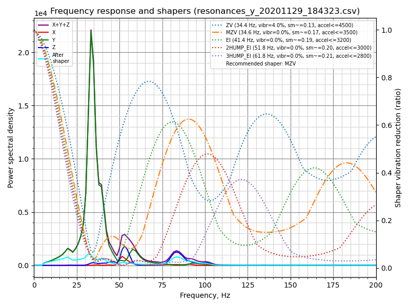
Fitted shaper 'zv' frequency = 34.4 Hz (vibrations = 4.0%, smoothing ~= 0.132)
To avoid too much smoothing with 'zv', suggested max_accel <= 4500 mm/sec^2
Fitted shaper 'mzv' frequency = 34.6 Hz (vibrations = 0.0%, smoothing ~= 0.170)
To avoid too much smoothing with 'mzv', suggested max_accel <= 3500 mm/sec^2
Fitted shaper 'ei' frequency = 41.4 Hz (vibrations = 0.0%, smoothing ~= 0.188)
To avoid too much smoothing with 'ei', suggested max_accel <= 3200 mm/sec^2
Fitted shaper '2hump_ei' frequency = 51.8 Hz (vibrations = 0.0%, smoothing ~= 0.201)
To avoid too much smoothing with '2hump_ei', suggested max_accel <= 3000 mm/sec^2
Fitted shaper '3hump_ei' frequency = 61.8 Hz (vibrations = 0.0%, smoothing ~= 0.215)
To avoid too much smoothing with '3hump_ei', suggested max_accel <= 2800 mm/sec^2
Recommended shaper is mzv @ 34.6 Hz
Die vorgeschlagene Konfiguration kann in den Abschnitt [input_shaper] der printer.cfg eingefügt werden, z. B.:
[input_shaper]
shaper_freq_x: ...
shaper_type_x: ...
shaper_freq_y: 34.6
shaper_type_y: mzv
[printer]
max_accel: 3000 # should not exceed the estimated max_accel for X and Y axes
oder Sie wählen anhand der erzeugten Diagramme selbst eine andere Konfiguration: Spitzen in der spektralen Leistungsdichte in den Diagrammen entsprechen den Resonanzfrequenzen des Druckers.
Beachten Sie, dass Sie die automatische Kalibrierung des Input Shapers alternativ auch direkt aus Klipper heraus ausführen können, was zum Beispiel für die Neukalibrierung des Input Shapers praktisch sein kann.
Bed-slinger Drucker¶
Wenn Ihr Drucker ein Bed-Slinger ist, müssen Sie die Position des Beschleunigungssensors zwischen den Messungen für die X- und die Y-Achse ändern: Messen Sie die Resonanzen der X-Achse mit dem am Druckkopf befestigten Beschleunigungssensor und die Resonanzen der Y-Achse mit dem am Bett befestigten Sensor (der übliche Bed-Slinger-Aufbau).
Sie können jedoch auch zwei Beschleunigungssensoren gleichzeitig anschließen, wobei der ADXL345 an unterschiedliche Platinen angeschlossen werden muss (etwa an einen RPi und eine Drucker-MCU-Platine) oder an zwei unterschiedliche physische SPI-Schnittstellen auf derselben Platine (selten verfügbar). Sie können dann wie folgt konfiguriert werden:
[adxl345 hotend]
# Assuming `hotend` chip is connected to an RPi
cs_pin: rpi:None
[adxl345 bed]
# Assuming `bed` chip is connected to a printer MCU board
cs_pin: ... # Printer board SPI chip select (CS) pin
[resonance_tester]
# Assuming the typical setup of the bed slinger printer
accel_chip_x: adxl345 hotend
accel_chip_y: adxl345 bed
probe_points: ...
Zwei MPUs können sich einen I2C-Bus teilen, können aber nicht gleichzeitig messen, da der I2C-Bus mit 400 kbit/s dafür nicht schnell genug ist. Bei einem muss der AD0-Pin auf 0V gezogen werden (Adresse 104) und beim anderen auf 3,3V (Adresse 105):
[mpu9250 hotend]
i2c_mcu: rpi
i2c_bus: i2c.1
i2c_address: 104 # This MPU has pin AD0 pulled low
[mpu9250 bed]
i2c_mcu: rpi
i2c_bus: i2c.1
i2c_address: 105 # This MPU has pin AD0 pulled high
[resonance_tester]
# Assuming the typical setup of the bed slinger printer
accel_chip_x: mpu9250 hotend
accel_chip_y: mpu9250 bed
probe_points: ...
[Testen Sie jede MPU einzeln, bevor Sie beide zur einfacheren Fehlersuche an den Bus anschließen.]
Dann verwenden die Befehle TEST_RESONANCES AXIS=X und TEST_RESONANCES AXIS=Y den jeweils richtigen Beschleunigungssensor für jede Achse.
Max smoothing¶
Bedenken Sie, dass der Input Shaper eine gewisse Glättung an den Teilen erzeugen kann. Die automatische Abstimmung des Input Shapers durch das Skript calibrate_shaper.py oder den Befehl SHAPER_CALIBRATE versucht, die Glättung nicht zu verstärken, gleichzeitig aber die verbleibenden Vibrationen zu minimieren. Manchmal treffen sie eine suboptimale Wahl der Shaper-Frequenz, oder Sie bevorzugen einfach weniger Glättung an den Teilen zulasten größerer verbleibender Vibrationen. In diesen Fällen können Sie verlangen, die maximale Glättung des Input Shapers zu begrenzen.
Betrachten wir die folgenden Ergebnisse der automatischen Abstimmung:
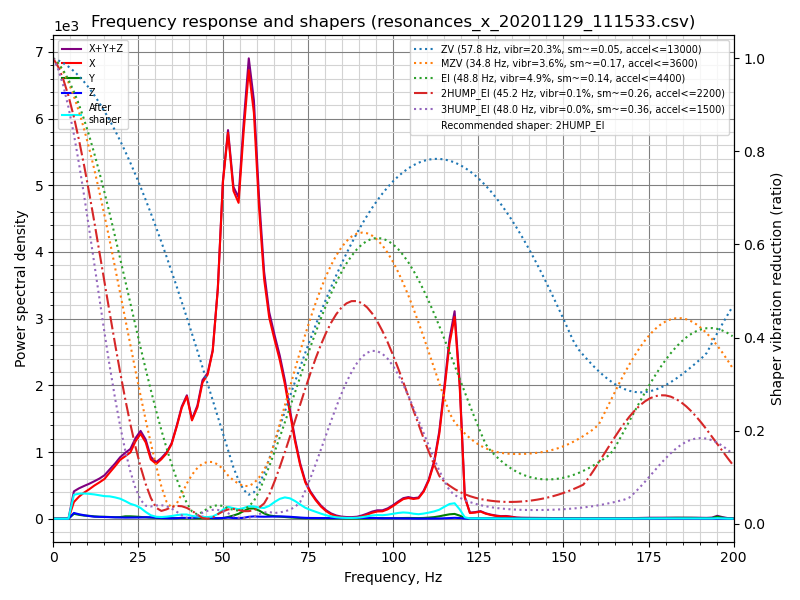
Fitted shaper 'zv' frequency = 57.8 Hz (vibrations = 20.3%, smoothing ~= 0.053)
To avoid too much smoothing with 'zv', suggested max_accel <= 13000 mm/sec^2
Fitted shaper 'mzv' frequency = 34.8 Hz (vibrations = 3.6%, smoothing ~= 0.168)
To avoid too much smoothing with 'mzv', suggested max_accel <= 3600 mm/sec^2
Fitted shaper 'ei' frequency = 48.8 Hz (vibrations = 4.9%, smoothing ~= 0.135)
To avoid too much smoothing with 'ei', suggested max_accel <= 4400 mm/sec^2
Fitted shaper '2hump_ei' frequency = 45.2 Hz (vibrations = 0.1%, smoothing ~= 0.264)
To avoid too much smoothing with '2hump_ei', suggested max_accel <= 2200 mm/sec^2
Fitted shaper '3hump_ei' frequency = 48.0 Hz (vibrations = 0.0%, smoothing ~= 0.356)
To avoid too much smoothing with '3hump_ei', suggested max_accel <= 1500 mm/sec^2
Recommended shaper is 2hump_ei @ 45.2 Hz
Beachten Sie, dass die angegebenen smoothing-Werte abstrakte, prognostizierte Werte sind. Diese Werte können zum Vergleich verschiedener Konfigurationen verwendet werden: Je höher der Wert, desto mehr Glättung erzeugt ein Shaper. Diese Glättungswerte stellen jedoch kein echtes Maß für die Glättung dar, da die tatsächliche Glättung von den Parametern max_accel und square_corner_velocity abhängt. Daher sollten Sie einige Testdrucke anfertigen, um zu sehen, wie viel Glättung eine gewählte Konfiguration tatsächlich erzeugt.
Im obigen Beispiel sind die vorgeschlagenen Shaper-Parameter nicht schlecht, aber was, wenn Sie weniger Glättung auf der X-Achse erhalten möchten? Sie können versuchen, die maximale Shaper-Glättung mit dem folgenden Befehl zu begrenzen:
~/klipper/scripts/calibrate_shaper.py /tmp/resonances_x_*.csv -o /tmp/shaper_calibrate_x.png --max_smoothing=0.2
was die Glättung auf einen Wert von 0,2 begrenzt. Nun können Sie das folgende Ergebnis erhalten:
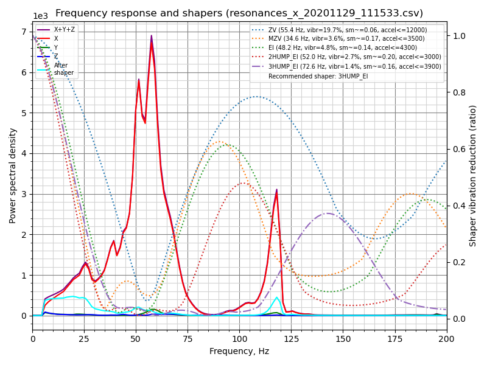
Fitted shaper 'zv' frequency = 55.4 Hz (vibrations = 19.7%, smoothing ~= 0.057)
To avoid too much smoothing with 'zv', suggested max_accel <= 12000 mm/sec^2
Fitted shaper 'mzv' frequency = 34.6 Hz (vibrations = 3.6%, smoothing ~= 0.170)
To avoid too much smoothing with 'mzv', suggested max_accel <= 3500 mm/sec^2
Fitted shaper 'ei' frequency = 48.2 Hz (vibrations = 4.8%, smoothing ~= 0.139)
To avoid too much smoothing with 'ei', suggested max_accel <= 4300 mm/sec^2
Fitted shaper '2hump_ei' frequency = 52.0 Hz (vibrations = 2.7%, smoothing ~= 0.200)
To avoid too much smoothing with '2hump_ei', suggested max_accel <= 3000 mm/sec^2
Fitted shaper '3hump_ei' frequency = 72.6 Hz (vibrations = 1.4%, smoothing ~= 0.155)
To avoid too much smoothing with '3hump_ei', suggested max_accel <= 3900 mm/sec^2
Recommended shaper is 3hump_ei @ 72.6 Hz
Im Vergleich zu den zuvor vorgeschlagenen Parametern sind die Vibrationen etwas größer, die Glättung ist jedoch deutlich geringer als zuvor, was eine höhere maximale Beschleunigung ermöglicht.
Bei der Entscheidung, welchen max_smoothing-Parameter Sie wählen, können Sie nach dem Prinzip von Versuch und Irrtum vorgehen. Probieren Sie einige verschiedene Werte aus und sehen Sie, welche Ergebnisse Sie erhalten. Beachten Sie, dass die vom Input Shaper erzeugte tatsächliche Glättung in erster Linie von der niedrigsten Resonanzfrequenz des Druckers abhängt: Je höher die Frequenz der niedrigsten Resonanz, desto geringer die Glättung. Wenn Sie das Skript daher anweisen, eine Konfiguration des Input Shapers mit unrealistisch geringer Glättung zu finden, geht das zulasten eines verstärkten Ringings bei den niedrigsten Resonanzfrequenzen (die typischerweise auch in Drucken deutlicher sichtbar sind). Überprüfen Sie deshalb immer die vom Skript prognostizierten verbleibenden Vibrationen und stellen Sie sicher, dass sie nicht zu hoch sind.
Beachten Sie: Wenn Sie für beide Achsen einen guten max_smoothing-Wert gewählt haben, können Sie ihn in der printer.cfg hinterlegen, und zwar als
[resonance_tester]
accel_chip: ...
probe_points: ...
max_smoothing: 0.25 # an example
Wenn Sie die automatische Abstimmung des Input Shapers später mit dem Klipper-Befehl SHAPER_CALIBRATE erneut ausführen, wird der gespeicherte max_smoothing-Wert als Referenz verwendet.
Auswahl von max_accel¶
Da der Input Shaper eine gewisse Glättung an den Teilen erzeugen kann, insbesondere bei hohen Beschleunigungen, müssen Sie dennoch einen max_accel-Wert wählen, der nicht zu viel Glättung an den gedruckten Teilen verursacht. Ein Kalibrierungsskript liefert eine Schätzung für den Parameter max_accel, bei der nicht zu viel Glättung entstehen sollte. Beachten Sie, dass der vom Kalibrierungsskript angezeigte max_accel-Wert nur ein theoretisches Maximum ist, bei dem der jeweilige Shaper noch arbeiten kann, ohne zu viel Glättung zu erzeugen. Er ist keinesfalls eine Empfehlung, diese Beschleunigung zum Drucken einzustellen. Die maximale Beschleunigung, die Ihr Drucker verkraften kann, hängt von seinen mechanischen Eigenschaften und vom maximalen Drehmoment der verwendeten Schrittmotoren ab. Daher wird empfohlen, max_accel im Abschnitt [printer] so zu setzen, dass die geschätzten Werte für die X- und Y-Achse nicht überschritten werden, wahrscheinlich mit einer konservativen Sicherheitsreserve.
Alternativ können Sie diesem Teil der Anleitung zur Input-Shaper-Abstimmung folgen und das Testmodell drucken, um den Parameter max_accel experimentell zu bestimmen.
Der gleiche Hinweis gilt für die Autokalibrierung des Input Shapers mit dem Befehl SHAPER_CALIBRATE: Es ist auch danach notwendig, den richtigen max_accel-Wert zu wählen, und die vorgeschlagenen Beschleunigungsgrenzen werden nicht automatisch übernommen.
Beachten Sie, dass die maximale Beschleunigung ohne übermäßige Glättung von square_corner_velocity abhängt. Es wird generell empfohlen, den Standardwert von 5,0 nicht zu ändern, da dieser Wert auch standardmäßig vom Skript calibrate_shaper.py verwendet wird. Falls Sie ihn dennoch geändert haben, sollten Sie dies dem Skript über den Parameter --square_corner_velocity=... mitteilen, z. B.
~/klipper/scripts/calibrate_shaper.py /tmp/resonances_x_*.csv -o /tmp/shaper_calibrate_x.png --square_corner_velocity=10.0
damit die maximalen Beschleunigungsempfehlungen korrekt berechnet werden können. Beachten Sie, dass der Befehl SHAPER_CALIBRATE den konfigurierten Parameter square_corner_velocity bereits berücksichtigt und eine explizite Angabe nicht erforderlich ist.
Wenn Sie eine erneute Shaper-Kalibrierung durchführen und die angegebene Glättung für die vorgeschlagene Shaper-Konfiguration nahezu dieselbe ist wie bei der vorherigen Kalibrierung, kann dieser Schritt übersprungen werden.
Messung der Resonanzen der Z-Achse¶
Die Messung der Resonanzen der Z-Achse ähnelt in vielen Aspekten der Messung der Resonanzen der X- und Y-Achse, mit einigen feinen Unterschieden. Wie bei den anderen Achsmessungen benötigen Sie einen Beschleunigungssensor, der an den beweglichen Teilen der Z-Achse montiert ist - entweder am Bett selbst (falls sich das Bett über die Z-Achse bewegt) oder am Werkzeugkopf (falls sich Werkzeugkopf/Portal über Z bewegt). Sie müssen die entsprechende Chip-Konfiguration zur printer.cfg hinzufügen und sie auch in den Abschnitt [resonance_tester] eintragen, z. B.
[resonance_tester]
accel_chip_z: <accelerometer full name>
Stellen Sie außerdem sicher, dass die in [resonance_tester] konfigurierten probe_points ausreichend Freiraum für Bewegungen der Z-Achse bieten (20 mm über der Bettoberfläche sollten mit den Standard-Testparametern ausreichend Freiraum bieten).
Der nächste zu beachtende Punkt ist, dass die Z-Achse in der Regel niedrigere maximale Geschwindigkeiten und Beschleunigungen erreicht als die X- und Y-Achse. Die Standardparameter des Tests berücksichtigen dies und sind deutlich weniger aggressiv, dennoch kann es nötig sein, max_z_accel und max_z_velocity zu erhöhen. Falls diese im Abschnitt [printer] konfiguriert sind, stellen Sie sicher, dass sie mindestens auf folgenden Wert gesetzt sind
[printer]
max_z_velocity: 20
max_z_accel: 1550
jedoch nur für die Dauer des Tests - anschließend können Sie sie bei Bedarf wieder auf ihre ursprünglichen Werte zurücksetzen. Und wenn Sie für die Z-Achse benutzerdefinierte Testparameter verwenden, liefern TEST_RESONANCES und SHAPER_CALIBRATE bei Bedarf die für Ihren konkreten Fall erforderlichen Mindestgrenzwerte.
Nachdem alle Änderungen an der printer.cfg vorgenommen wurden, starten Sie Klipper neu und führen Sie entweder
TEST_RESONANCES AXIS=Z
oder
SHAPER_CALIBRATE AXIS=Z
aus und gehen Sie von dort aus wie bei den anderen Achsen vor. Nach dem Befehl TEST_RESONANCES können Sie beispielsweise das Skript calibrate_shaper.py ausführen, um Shaper-Empfehlungen sowie das Diagramm der Resonanzantwort zu erhalten:
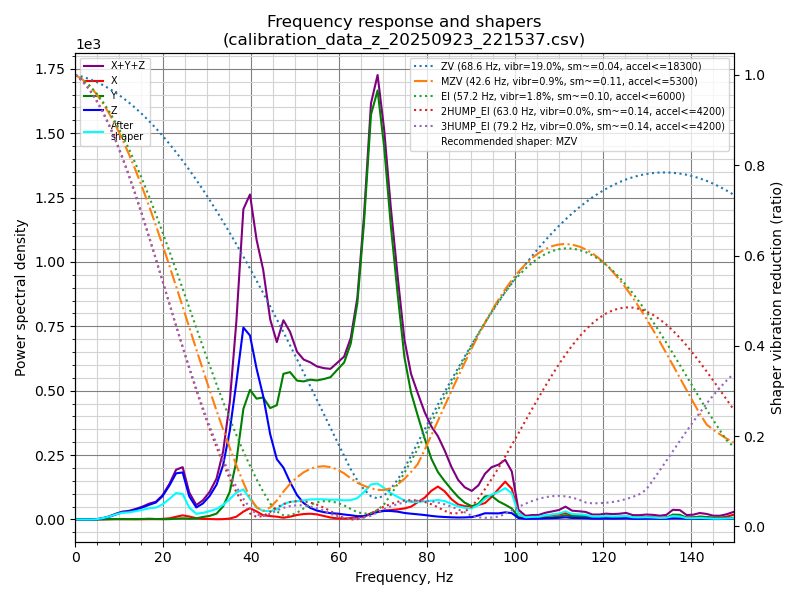
Nach der Kalibrierung können die Shaper-Parameter in der printer.cfg gespeichert werden, z. B. aus dem obigen Beispiel:
[input_shaper]
...
shaper_type_z: mzv
shaper_freq_z: 42.6
Da sich die Z-Achse zudem nur langsam bewegt, können Sie ohne Weiteres auch aggressivere Input Shaper in Betracht ziehen, z. B.
[input_shaper]
...
shaper_type_z: 2hump_ei
shaper_freq_z: 63.0
Liefert der Test fehlerhafte Ergebnisse, können Sie versuchen, den Parameter accel_per_hz_z in [resonance_tester] von seinem Standardwert 15 auf einen größeren Wert im Bereich von 20-30 zu erhöhen, z. B.
[resonance_tester]
accel_per_hz_z: 25
und den Test wiederholen. Eine Erhöhung dieses Werts erfordert wahrscheinlich auch eine Erhöhung der Parameter max_z_accel und max_z_velocity. Mit dem Befehl TEST_RESONANCES AXIS=Z erhalten Sie die dafür erforderlichen Mindestwerte.
Falls Sie jedoch nicht in der Lage sind, die Resonanzen der Z-Achse zu messen, können Sie einfach
[input_shaper]
...
shaper_type_z: 3hump_ei
shaper_freq_z: 65
als eine akzeptable Allround-Wahl in Betracht ziehen, da die Glättung der Z-Achsenbewegungen hier keine besondere Rolle spielt.
Unzuverlässige Messungen der Resonanzfrequenzen¶
Manchmal können die Resonanzmessungen fehlerhafte Ergebnisse liefern, was zu falschen Vorschlägen für die Input Shaper führt. Dies kann verschiedene Ursachen haben, unter anderem laufende Lüfter am Werkzeugkopf, eine falsche Position oder nicht starre Montage des Beschleunigungssensors, oder mechanische Probleme wie lose Riemen oder eine klemmende oder unruhig laufende Achse. Beachten Sie, dass für die Resonanzmessung alle Lüfter deaktiviert sein sollten, insbesondere die lauten, und dass der Beschleunigungssensor starr auf dem entsprechenden beweglichen Teil montiert sein sollte (z. B. direkt auf dem Bett bei einem Bed Slinger oder am Extruder des Druckers selbst statt am Schlitten - manche Anwender erzielen bessere Ergebnisse, wenn der Sensor direkt an der Düse montiert wird). Bei mechanischen Problemen sollte der Anwender prüfen, ob es Mängel an einer bewegten Achse gibt, die behoben werden können (z. B. Linearführungsschienen reinigen und schmieren sowie die Spannung der V-Slot-Rollen korrekt einstellen). Hilft das alles nicht, kann ein Anwender einen der anderen in der Liste ausgegebenen Shaper anstelle des standardmäßig empfohlenen ausprobieren.
Testen benutzerdefinierter Achsen¶
Der Befehl TEST_RESONANCES unterstützt benutzerdefinierte Achsen. Auch wenn das für die Kalibrierung des Input Shapers nicht wirklich nützlich ist, kann es verwendet werden, um die Druckerresonanzen eingehend zu untersuchen und zum Beispiel die Riemenspannung zu prüfen.
Um die Riemenspannung an CoreXY-Druckern zu prüfen, führen Sie Folgendes aus
TEST_RESONANCES AXIS=1,1 OUTPUT=raw_data
TEST_RESONANCES AXIS=1,-1 OUTPUT=raw_data
und verwenden Sie graph_accelerometer.py, um die erzeugten Dateien zu verarbeiten, z. B.
~/klipper/scripts/graph_accelerometer.py -c /tmp/raw_data_axis*.csv -o /tmp/resonances.png
wodurch die Datei /tmp/resonances.png erzeugt wird, in der die Resonanzen verglichen werden.
Führen Sie bei Delta-Druckern mit der Standardanordnung der Türme (Turm A ~= 210 Grad, B ~= 330 Grad und C ~= 90 Grad) Folgendes aus
TEST_RESONANCES AXIS=0,1 OUTPUT=raw_data
TEST_RESONANCES AXIS=-0.866025404,-0.5 OUTPUT=raw_data
TEST_RESONANCES AXIS=0.866025404,-0.5 OUTPUT=raw_data
und dann den gleichen befehl verwenden
~/klipper/scripts/graph_accelerometer.py -c /tmp/raw_data_axis*.csv -o /tmp/resonances.png
um die Datei /tmp/resonances.png zu erstellen, in der die Resonanzen verglichen werden.
Input Shaper Autokalibrierung¶
Neben der manuellen Wahl der passenden Parameter für die Input-Shaper-Funktion ist es auch möglich, die automatische Abstimmung des Input Shapers direkt aus Klipper heraus auszuführen. Führen Sie den folgenden Befehl über das Octoprint-Terminal aus:
SHAPER_CALIBRATE
Damit wird der vollständige Test für beide Achsen ausgeführt und eine CSV-Ausgabe (standardmäßig /tmp/calibration_data_*.csv) für den Frequenzgang und die vorgeschlagenen Input Shaper erzeugt. In der Octoprint-Konsole erhalten Sie außerdem die vorgeschlagenen Frequenzen für jeden Input Shaper sowie die Angabe, welcher Input Shaper für Ihren Aufbau empfohlen wird. Zum Beispiel:
Calculating the best input shaper parameters for y axis
Fitted shaper 'zv' frequency = 39.0 Hz (vibrations = 13.2%, smoothing ~= 0.105)
To avoid too much smoothing with 'zv', suggested max_accel <= 5900 mm/sec^2
Fitted shaper 'mzv' frequency = 36.8 Hz (vibrations = 1.7%, smoothing ~= 0.150)
To avoid too much smoothing with 'mzv', suggested max_accel <= 4000 mm/sec^2
Fitted shaper 'ei' frequency = 36.6 Hz (vibrations = 2.2%, smoothing ~= 0.240)
To avoid too much smoothing with 'ei', suggested max_accel <= 2500 mm/sec^2
Fitted shaper '2hump_ei' frequency = 48.0 Hz (vibrations = 0.0%, smoothing ~= 0.234)
To avoid too much smoothing with '2hump_ei', suggested max_accel <= 2500 mm/sec^2
Fitted shaper '3hump_ei' frequency = 59.0 Hz (vibrations = 0.0%, smoothing ~= 0.235)
To avoid too much smoothing with '3hump_ei', suggested max_accel <= 2500 mm/sec^2
Recommended shaper_type_y = mzv, shaper_freq_y = 36.8 Hz
Wenn Sie mit den vorgeschlagenen Parametern einverstanden sind, können Sie nun SAVE_CONFIG ausführen, um sie zu speichern und Klipper neu zu starten. Beachten Sie, dass dabei der Wert max_accel im Abschnitt [printer] nicht aktualisiert wird. Sie sollten ihn manuell anpassen und dabei die Hinweise im Abschnitt Auswahl von max_accel beachten.
Wenn Ihr Drucker ein Bed-Slinger ist, können Sie angeben, welche Achse getestet werden soll, damit Sie den Montagepunkt des Beschleunigungssensors zwischen den Tests wechseln können (standardmäßig wird der Test für beide Achsen durchgeführt):
SHAPER_CALIBRATE AXIS=Y
Sie können SAVE_CONFIG zweimal ausführen – jeweils nach der Kalibrierung einer Achse.
Wenn Sie jedoch zwei Beschleunigungssensoren gleichzeitig angeschlossen haben, führen Sie einfach SHAPER_CALIBRATE ohne Angabe einer Achse aus, um den Input Shaper für beide Achsen in einem Durchgang zu kalibrieren.
Input Shaper Rekalibrierung¶
Der Befehl SHAPER_CALIBRATE kann auch verwendet werden, um den Input Shaper zu einem späteren Zeitpunkt neu zu kalibrieren, insbesondere wenn Änderungen am Drucker vorgenommen wurden, die seine Kinematik beeinflussen können. Sie können entweder die vollständige Kalibrierung mit dem Befehl SHAPER_CALIBRATE erneut ausführen oder die Autokalibrierung mit dem Parameter AXIS= auf eine einzelne Achse beschränken, etwa so
SHAPER_CALIBRATE AXIS=X
Warnung! Es wird nicht empfohlen, die automatische Shaper-Kalibrierung sehr häufig auszuführen (z. B. vor jedem Druck oder täglich). Um die Resonanzfrequenzen zu bestimmen, erzeugt die automatische Kalibrierung intensive Vibrationen auf jeder der Achsen. 3D-Drucker sind im Allgemeinen nicht dafür ausgelegt, längere Vibrationen nahe den Resonanzfrequenzen auszuhalten. Dies kann den Verschleiß der Druckerkomponenten erhöhen und deren Lebensdauer verkürzen. Zudem besteht ein erhöhtes Risiko, dass sich Teile lösen oder lockern. Prüfen Sie nach jeder automatischen Kalibrierung stets, dass alle Teile des Druckers (auch solche, die sich normalerweise nicht bewegen) sicher befestigt sind.
Aufgrund von Rauschen in den Messungen ist es außerdem möglich, dass die Abstimmungsergebnisse von einem Kalibrierungsdurchlauf zum nächsten leicht abweichen. Dennoch ist nicht zu erwarten, dass das Rauschen die Druckqualität zu stark beeinflusst. Es wird jedoch weiterhin empfohlen, die vorgeschlagenen Parameter zu überprüfen und einige Testdrucke anzufertigen, bevor Sie sie verwenden, um sicherzustellen, dass sie gut sind.
Offline Verarbeitung der Beschleunigungsmesser Daten¶
Es ist möglich, die Rohdaten des Beschleunigungssensors zu erzeugen und offline zu verarbeiten (z. B. auf einem Host-Rechner), etwa um Resonanzen zu finden. Führen Sie dazu die folgenden Befehle über das Octoprint-Terminal aus:
SET_INPUT_SHAPER SHAPER_FREQ_X=0 SHAPER_FREQ_Y=0
TEST_RESONANCES AXIS=X OUTPUT=raw_data
Etwaige Fehler des Befehls SET_INPUT_SHAPER können Sie dabei ignorieren. Geben Sie für den Befehl TEST_RESONANCES die gewünschte Testachse an. Die Rohdaten werden in das Verzeichnis /tmp auf dem RPi geschrieben.
Die Rohdaten können auch ermittelt werden, indem der Befehl ACCELEROMETER_MEASURE während einer normalen Druckeraktivität zweimal ausgeführt wird - einmal, um die Messung zu starten, und ein weiteres Mal, um sie zu beenden und die Ausgabedatei zu schreiben. Weitere Details finden Sie unter G-Codes.
Die Daten können später mit den folgenden Skripten verarbeitet werden: scripts/graph_accelerometer.py und scripts/calibrate_shaper.py. Beide akzeptieren je nach Modus eine oder mehrere Roh-CSV-Dateien als Eingabe. Das Skript graph_accelerometer.py unterstützt mehrere Betriebsmodi:
- Darstellung der Rohdaten des Beschleunigungssensors (Parameter
-rverwenden), es wird nur eine Eingabedatei unterstützt; - Darstellung eines Frequenzgangs (keine zusätzlichen Parameter erforderlich); werden mehrere Eingabedateien angegeben, wird der mittlere Frequenzgang berechnet;
- Vergleich des Frequenzgangs zwischen mehreren Eingabedateien (Parameter
-cverwenden); zusätzlich können Sie mit dem Parameter-a x,-a yoder-a zangeben, welche Achse des Beschleunigungssensors berücksichtigt werden soll (ohne Angabe wird die Summe der Vibrationen aller Achsen verwendet); - Darstellung des Spektrogramms (Parameter
-sverwenden), es wird nur eine Eingabedatei unterstützt; zusätzlich können Sie mit dem Parameter-a x,-a yoder-a zangeben, welche Achse des Beschleunigungssensors berücksichtigt werden soll (ohne Angabe wird die Summe der Vibrationen aller Achsen verwendet).
Beachten Sie, dass das Skript graph_accelerometer.py nur die Dateien raw_data*.csv unterstützt und nicht die Dateien resonances*.csv oder calibration_data*.csv.
Zum Beispiel,
~/klipper/scripts/graph_accelerometer.py /tmp/raw_data_x_*.csv -o /tmp/resonances_x.png -c -a z
zeichnet den Vergleich mehrerer /tmp/raw_data_x_*.csv-Dateien für die Z-Achse in die Datei /tmp/resonances_x.png.
Das Skript shaper_calibrate.py akzeptiert eine oder mehrere Eingabedateien, kann eine automatische Abstimmung des Input Shapers durchführen und die besten Parameter vorschlagen, die für alle bereitgestellten Eingaben gut funktionieren. Es gibt die vorgeschlagenen Parameter auf der Konsole aus und kann zusätzlich ein Diagramm erzeugen, wenn der Parameter -o output.png angegeben wird, oder eine CSV-Datei, wenn der Parameter -c output.csv angegeben wird.
Mehrere Eingabedateien an das Skript shaper_calibrate.py zu übergeben, kann bei einer fortgeschrittenen Abstimmung der Input Shaper nützlich sein, zum Beispiel:
TEST_RESONANCES AXIS=X OUTPUT=raw_data(und für dieY-Achse) für eine einzelne Achse zweimal an einem Bed-Slinger auszuführen – beim ersten Mal mit dem Beschleunigungssensor am Druckkopf, beim zweiten Mal mit dem Sensor am Bett –, um Kreuzresonanzen der Achsen zu erkennen und zu versuchen, sie mit Input Shapern zu unterdrücken.TEST_RESONANCES AXIS=Y OUTPUT=raw_datazweimal an einem Bed-Slinger mit einem Glasbett und einer magnetischen Oberfläche (die leichter ist) auszuführen, um die Input-Shaper-Parameter zu finden, die für jede Druckoberflächen-Konfiguration gut funktionieren.- Zusammenführung der Resonanzdaten von mehreren Testpunkten.
- Die Resonanzdaten von zwei Achsen zu kombinieren (z. B. an einem Bed-Slinger, um den
input_shaperder X-Achse anhand der Resonanzen sowohl der X- als auch der Y-Achse zu konfigurieren und so Vibrationen des Betts zu unterdrücken, falls die Düse bei Bewegungen in X-Richtung an einem Druck "hängen bleibt").